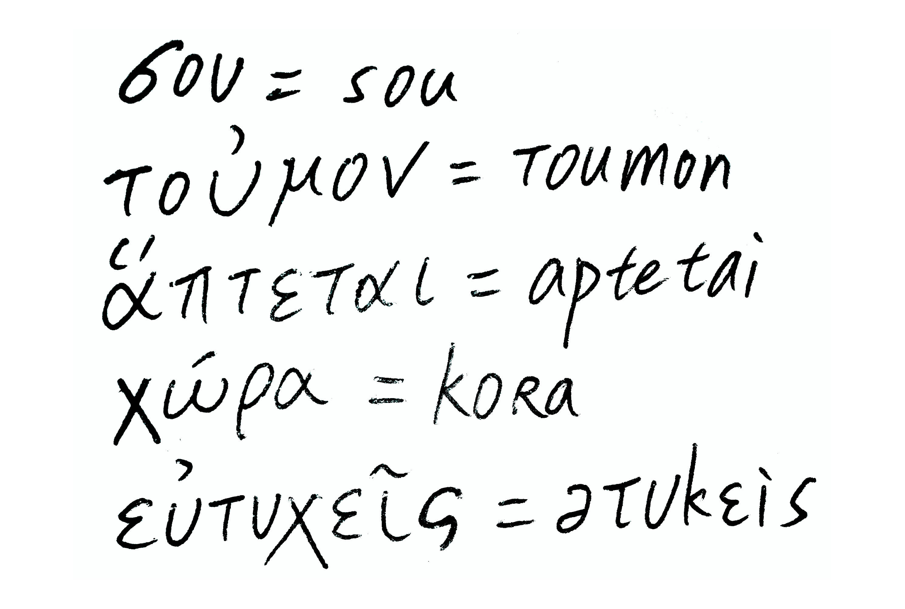
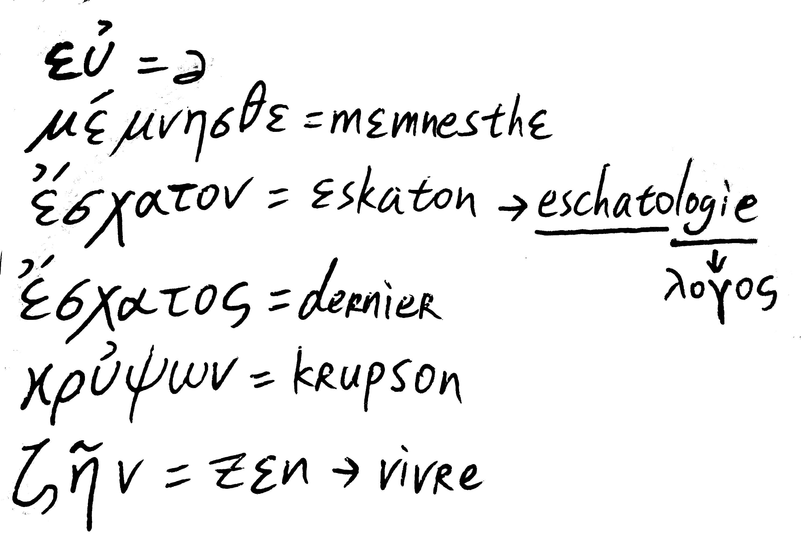
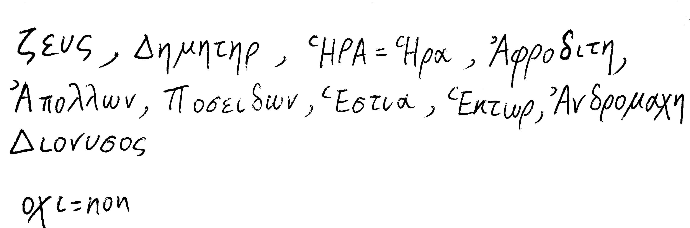

GREC DEBUTANT
Cours 1
L'alphabet grec (24 lettre)
| Capitale | Minuscule | nom | prononciation érasmienne | prononciation moderne |
| Α | α | ἄλφα | /a/ |
| Β | β | βῆτα | /b/ | /v/ |
| Γ | γ | γάμμα | /g/ | /ɣ/ |
| Δ | δ | δέλτα | /d/ | /ð/ |
| Ε | ε | ἒ ψιλόν | /e/(é, fermé bref) | /ɛ/ |
| Ζ | ζ | ζῆτα | /dz/ | /z/ |
| Η | η | ἦτα | /ɛ/(è, ouvert long) | /i/ |
| Θ | θ | θῆτα | /tʰ/ | /θ/ |
| Ι | ι | ἰῶτα | /i/ |
| Κ | κ | κάππα | /k/ |
| Λ | λ | λάμβδα | /l/ |
| Μ | μ | μῦ | /m/ |
| Ν | ν | νῦ | /n/ |
| Ξ | ξ | ξῖ | /ks/ |
| Ο | ο | ὂ μικρόν | /ɔ/(ouvert bref) |
| Π | π | πῖ | /p/ |
| Ρ | ρ | ῥῶ | /r/ | /ɾ/ |
| Σ | σ / ς | σῖγμα | /s/ |
| Τ | τ | ταῦ | /t/ |
| Υ | υ | ὒ ψιλόν | /y/ | /i/ |
| Φ | φ | φῖ | /f/ |
| Χ | χ | χῖ | /kʰ/ | /x/ |
| Ψ | ψ | ψῖ | /ps/ |
| Ω | ω | ὦ μέγα | /o/(fermé long) |
μικρόν = petit ; μέγα = mega; donc ὂ μικρόν (ο) et ὦ μέγα (ω)
La prononciation érasmienne est la prononciation du grec adoptée en France depuis la Renaissance. Elle n'a que peu dc rapports avec celle des Grecs, anciens ou contemporains. Par exemple. elle ne distingue pas r de θ, κ de χ ; elle inverse le timbre de ο et ω, etc…
Prononciation de quelque groupes particuliers:
— les diphtongues: ce sont des combinaisons de sons vocaliques.
| αι se prononce | /aï/(dans aïe!) | αυ se prononce | /o/ (dans autre) |
| ει … | /eï/ (dans sommeil) | ευ ... | /ö/ (dans heurcux) |
| οι … | /oï/ (dans l’anglais oyster) | ου … | /u/ (dans coucou) |
— les nasales ν et μ: elles ne nasalisent pas la voyelle qui précédei.
Ex: la syllabe finale de μικρόν se prononce comme celle de couronne.
— les groupes γγ, γκ, γχ, γς: dans ces groupes, γ se nasalise.
Ex: ἄγγελος se prononce comme duns all. Angst ; σφἰγξ se prononce comme dans angl. king.
Esprits
Toute voyelle initials, ainsi que tout ρ initial ports un signe appelé esprit.
— L'esprit rude. noté ῾, marque la présence d'une aspiration en début de mot.
Ex: ἔτερος("autre") se prononçait hετερος et a donné en français le préfixe hétéro-. Tous les mots commençant par ρ portent un esprit rude.
Ex: ῥόδος ( "la rose"), que l'on trouve en français dans rhododendron.
- L'esprit doux, noté ᾿. marque l'absence d'aspiration en début de mot. Ex: αὐτός (“soi-même”). qui a donné en français le préfixe auto-.
Accents
Tous les mots grecs — à quelques exceptions prés — sont accentués sur l'une des trois dernières syllabes.
—L'accent aigu est noté ´.
—L'accent grave est noté `. On ne peut le trouver que sur une syllabe finale.
— L'accent circonflexe est noté ῀. Oh ne le trouve que sur une voyelle longue, c'est-à-dire. η, ω, ι, et υ longs, et les diphtongues.
Place de l'esprit
Si l'accent porte sur la syllabe initiale du mot, l'esprit précéde l’accent aigu et se place sous l'accent circonflexe. EX: ἄνθρωπος, ὕδωρ, ἦν, ὦ.
Lorsque le mot commence par une diphtongue, l'esprit se place sur la deuxième voyelle de cette diphtongue. Ex: αἰτία, εὑρίσκω. Si l'accent porte sur la syllabe initiale, i1 se place de la même façon. Ex: αἶμα, οἶκος, αὖρα.
Lorsque le mot commence par une majuscule, l'esprit, et éventuellement l'accent, se placent devant la majuscule — sauf si l'on est dans le cas d'une diphtongue. Ex: Ἕλλην, Ἀθῆναι, mais Αἴγυπτος.
Le iota souscrit
Dans les anciennes diphtongues ayant un premier élément long (α long noté ᾱ, η ou ω) et un iota comme second élément, celui-ci ne se prononce pas et s'écrit sous la première voyelle.
ᾱι se prononce /a/ et s'écrit ᾳ ; ηι se prononce /e/ et s'écrit ῃ ; ωι se prononce /o/ et s'écrit ῳ.
Ex: τῷ λόγῳ, τῇ σκηνῇ, ᾄδω.
ΑΤΤΕΝΤΙΟΝ! Lorsqu'il accompagne une majuscule, 1e iota souscrit devient adscrit, càd qu'il s'écrit à côté de la voyelle. Comme il est muet, i1 ne porte pas l'esprit et l'accent. Ex: Ἅιδης “Hadès”.
Exercices:
-- Apprendre l’alphabet en minuscules et majuscules.
-- Lire et copier le texte suivant : (extrait de “Pentalogia Graeca”)
ὦ φῶς ἀφεγγές, πρόσθε πού ποτ᾽ ἦσθ᾽ ἐμόν,
νῦν δ᾽ ἔσχατόν σου τοὐμὸν ἅπτεται δέμας. 1550
ἤδη γὰρ ἕρπω τὸν τελευταῖον βίον
κρύψων παρ᾽ Ἅιδην. ἀλλά, φίλτατε ξένων,
αὐτός τε χώρα θ᾽ ἥδε πρόσπολοί τε σοὶ
εὐδαίμονες γένοισθε, κἀπ᾽ εὐπραξίᾳ
μέμνησθέ μου θανόντος εὐτυχεῖς ἀεί. 1555

-- Ecrire en majuscules les mots suivants:
φίλτατε ξένςν , βίον, ἀφεγγές, εὐδαίμονες, εὐπραξίᾳ , μέμνησθε , ἔσχατον, κρύψων , ζῆν,

--Transcrire en grec les noms suivants:
Zeus(Zeus), Dèmèter (Dēmētēr), Hera (Hēra), Aphrodite(Aphrŏditē), Apollon (Apŏllōn), Poseidon( Pŏseidōn), Hestia (Hĕstia), Hector(Hĕktōr), Andromaque(Andrŏmachē), Dionysos(Diŏnusŏs)

(¯ indique une voyelle longu: η ω ; ˘ indique une voyelle brève: ε ο.)
th = θ ; ch = χ; ph = φ.